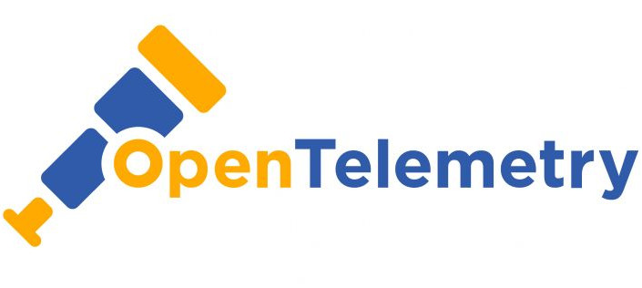

Occupation
I'm a software engineer and a tech leader with more than 15 years of professional experience.
In my career I've designed, implemented and maintained solutions in Kotlin, Java, Scala and Python. You can check out my LinkedIn profile for more details.
In my career I've designed, implemented and maintained solutions in Kotlin, Java, Scala and Python. You can check out my LinkedIn profile for more details.

Observability
It's one thing to build software, it's quite another to make sure it's smoothly running in production.
The topic of distributed tracing and baggage propagation for Kotlin backend code is fascinating. See me expore it in this repo.
The topic of distributed tracing and baggage propagation for Kotlin backend code is fascinating. See me expore it in this repo.
On GitHub
I love sharing things on GitHub.
For example, if you need a cheatsheet for working with Linux Mint or Ubuntu via Terminal, I already have you covered.
On top of that, I always try being a good citizen and report bugs back to the open-source projects that I'm using.
For example, if you need a cheatsheet for working with Linux Mint or Ubuntu via Terminal, I already have you covered.
On top of that, I always try being a good citizen and report bugs back to the open-source projects that I'm using.
KotLink
KotLink (now discontinued) was probably the most successful of my pet projects.
It was created to solve the problem of sharing memorable URL aliases with the colleagues.
It was created to solve the problem of sharing memorable URL aliases with the colleagues.
Hobbies
Outside of work I'm interested in great many things. Among them are the Fantasy & Sci-Fi genres, which I enjoy in all shapes and forms, be it in computer games, TV series, movies or books.